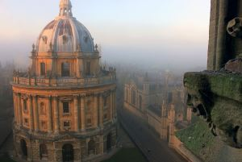
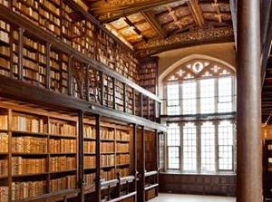
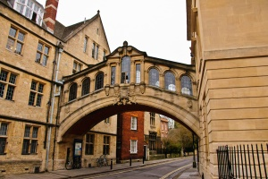
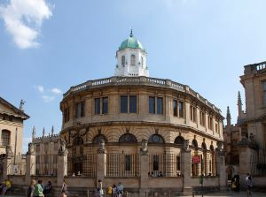
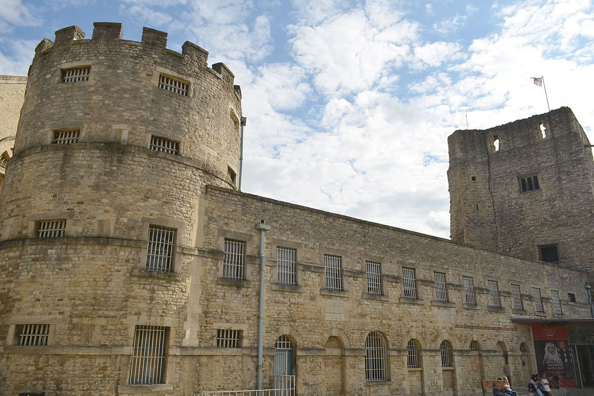
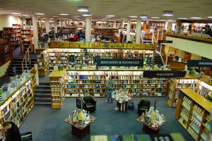
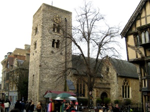

Historical Locations
Oxford, beyond housing the University of Oxford, is home to historical locations
including examples of English architecture through the centuries.
The Radcliffe Camera

The Radcliffe Camera can only be described as Oxford's most iconic building. Dominating the small cobbled square in which it's found, this large, circular building was designed by James Gibbs and built in 1737-1749. Built in the English Palladian style, it forms part of the Bodleian Library complex. It houses mainly English, History and Theology books, and because it's a working library, only students and scholars are admitted.
The Bodleian Library

While the Radcliffe Camera is off-limits to tourists, the nearby Bodleian Library buildings can be seen on one of its guided tours, and there's an excellent gift shop too. The Bodleian – known colloquially as ‘The Bod' – is the nerve centre of this vast library, which is a legal deposit library, meaning it's entitled to a copy of every book ever published in the UK and Ireland. What you see above the ground constitutes only a small fraction of its overall holdings, which are housed in vast underground networks that few will ever be lucky enough to see. As you walk past the main entrance, you'll see some huge wooden doors, which are adorned by the crests of all the Oxford colleges.
The Bridge of Sighs

Although it's not really a building as such, no discussion of Oxford's architecture would feel complete without some mention of the Bridge of Sighs. Completed in 1914, the Bridge of Sighs lies right opposite the entrance to the Bodleian Library, and connects two part of Hertford College (once the college of Brideshead Revisited author Evelyn Waugh). Famous for its similarity to the Bridge of Sighs in Venice, though not actually modelled on it, this one is a little more ornate and provides a popular photo opportunity for tourists, who pose on New College Lane beneath it.
The Sheldonian Theatre

This unusually-shaped building was designed by Sir Christopher Wren, and lies adjacent to the Bodleian Library. The building gets its name from the then-chancellor, the Archbishop of Canterbury Gilbert Sheldon. For most of the year it's used as a concert venue, and in 2008 it was famously the venue of a speech by the Dalai Lama. However, at the start of the academic year it's the scene of what's called the Matriculation Ceremony: the centuries-old process all new Oxford students must go through in order to become an official member of the university. It also marks the end of a student's academic career, as it's where graduation ceremonies are held on special days throughout the year. Freshers and graduates have been passing through its doors since it was opened in 1669, making it one of Oxford's most famous and prestigious venues.
Oxford Castle

With most of the focus in Oxford being on the university, it's easy to forget that its history goes back further than the institution that dominates it. A reminder of this lies in the form of Oxford Castle, a partly-ruined Norman castle dating from the 11th century. It replaces an earlier moated motte and bailey castle on the same site. The castle was mostly destroyed in the English Civil War, and what was left of it became a prison, which occupied these buildings and then a set of new ones built from 1785 onwards. This was in use until 1996, when it was transformed into a luxury hotel.
Blackwell's Bookshop

Blackwell's Bookshop is as much an Oxford institution as some of the revered buildings we've already mentioned. The flagship Oxford store – now just one of dozens of branches across the country – began life as a shop measuring just 12ft square. These days it still looks tiny from the outside, but go in via either of its two entrances and you'll soon discover that it opens out into an Aladdin's Cave filled to the brim with books on every subject. Since its expansion into neighbouring shops, it's now spread across several floors, and with a vast basement that goes down several more levels, it's a building that constantly surprises with nooks and crannies. It's very easy to get lost in it, and it's even easier to come out clutching a stack of book purchases bigger than one can realistically carry.
Saxon Tower

The Saxon Tower of St Michael at the North Gate lies just off busy Cornmarket Street. So-called because this was the site of the northern gate in the days when Oxford had city walls, the church dates to around 1000-1050, while the tower is Oxford's oldest building, dating from 1040. On display in the church tower is the cell door of the Oxford Martyrs, who were imprisoned in the adjoining Bocardo Prison before being burnt at the stake just outside the city walls, in what is now Broad Street.
Explore Oxford!
Home BackSocial Scene
St. Peter's College, New Inn Hall Street
7-8 Park End Street, Oxford OX1 1HH
162 Cowley Road, Oxford OX4 1UE
38 South Parade, Summertown, Oxford OX2 7JN
5-6 Little Clarendon Street, Oxford OX1 2HP
CS220 Human Computer Interaction 2017